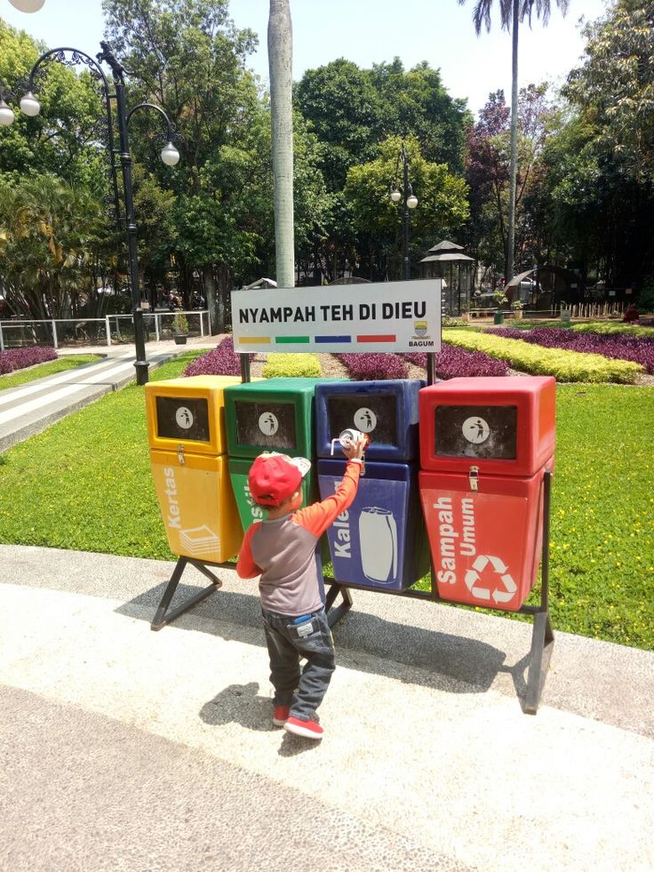

Teknik Daur Ulang Kertas
Pelajari teknik sederhana mengubah kertas bekas menjadi produk baru yang bermanfaat
Kertas bekas bisa diubah menjadi produk bernilai tinggi melalui proses daur ulang sederhana. Dengan teknik yang tepat, kita dapat mengurangi limbah kertas sekaligus menciptakan barang baru yang berguna.
Langkah-langkah Daur Ulang Kertas
- Kumpulkan kertas bekas seperti koran, buku, atau kemasan kertas.
- Potong-potong kecil dan rendam dalam air selama beberapa jam.
- Hancurkan hingga menjadi bubur kertas menggunakan blender.
- Tambahkan pewarna alami atau bahan tambahan sesuai kebutuhan.
- Cetak bubur kertas pada saringan datar, lalu tiriskan airnya.
- Jemur atau keringkan hingga menjadi lembaran kertas baru.
Manfaat Daur Ulang Kertas
- Mengurangi penebangan pohon.
- Menekan volume sampah yang dibuang.
- Menghemat energi dan air dalam proses produksi kertas baru.
- Menciptakan peluang usaha dari produk kreatif.